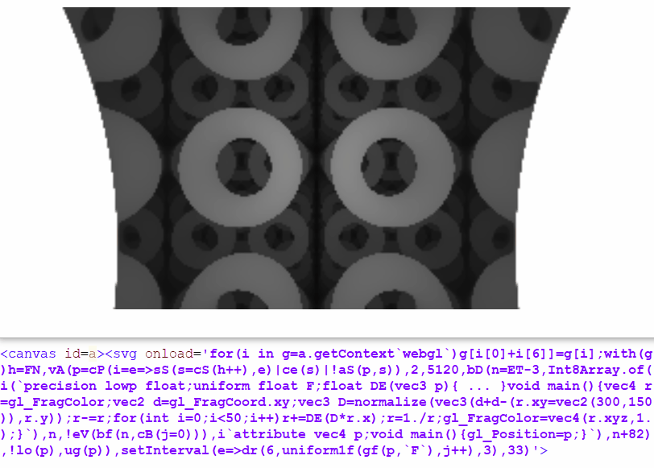
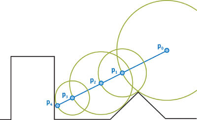
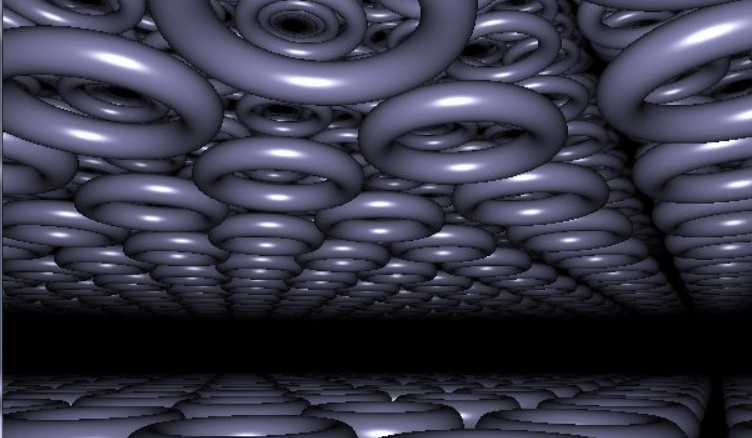

WebGL quest #2: tiny raymarching bootstrap with Distance Estimation functions
may 2017
TL;DR
A simple WebGL raycasting algorithm, accepting any Distance Estimation function and rendering it with distance fog and no distorsion, can be as short as 135b! (DEMO)
void mainImage(out vec4 r,vec2 d){vec3 D=normalize(vec3(d+d-(r.xy=iResolution.xy),r.y));r-=r;for(int i=0;i<50;i++)r+=DE(D*r.x);r=1./r;}
That's for the shader alone. For a complete demo including a WebGL bootstrap in HTML/JS and the shader input "F" as a frame counter, the total is 531b. (DEMO)

Introduction
This article is the sequel of our first WebGL quest, that should be read first.
After JS1k 2017 (where we presented MiniShadertoy based on our 349b WebGL bootstrap), we started reading many articles and tutorials explaining how to draw 3D shapes, with shadows, using raymarching algorithms and distance estimation functions, with WebGL.
Here are some of the best resources we've found on this subject:
- Distance Estimated 3D Fractals
- iquilezles.org (the entire site but especially the pages about distance functions and avoiding trigonometry)
- How to Create Content with Signed Distance Functions (awesome video)
- hg_sdf, the lib used in the video above.
- Building Worlds With Distance Functions in GLSL (Raymarching)
- Ray Marching and Signed Distance Functions
- Potatro, RayMarching and DistanceFields : a story of SphereTracing
- Sphere Tracing, Distance Fields, and Fractals
- Scratchapixel (Learn Computer Graphics From Scratch!)
- Writing a simple distance field raymarcher
- A simple shadertoy demo made by LiterallyLara (uncomment line 38 to render a torus instead of a sphere)
- HOWTO Get Started With Ray Marching by MysticReddit
- GLSL Raymarch ShaderToy tutorial and example code by sephirot47
- ShaderToy Raymarch Tutorial video (with super short source code)
- 2D distance functions (interesting too!)
- a tutorial about ray marching distance fields (using a ray marcher in Shadertoy)
Once all that was understood, our goal was to make a WebGL raymarcher compatible with any distance estimation function, and as small as possible.
Raymarching? Distance estimation?
To sum up very quickly (and not exhaustively), this rendering technique consists in sending a ray from the camera, in a 3D scene, for each pixel of the canvas...
The scene is defined with an equation, or the combination of many equations representing each of the objects we want to draw. These equations can be translated in source code, that's what we call Distance Estimation (DE) functions. These functions have the advantage to tell you how far from the object is any point in the 3D space...
Each ray then "marches" (advances in the scene) in many steps, by computing at the beginning, and at each step, its distance from the nearest object of the scene, and progressing that exact distance in the scene until the closest object is hit (or close enough to be considered as hit). In this case, the corresponding pixel of the canvas can be colored with the color of the hit object.
Fog can be applied very easily, based on the hit distance, to give a sense of depth, or hide the objects that are further than the max ray distance.
Shadows and light reflections can also be rendered quite easily by aiming for the the light source from each hit point and seeing if something is placed in-between or not.
If a ray doesn't hit any object, it must be stopped after a certain distance to avoid an infinite loop.

Simple operations can be applied to the DE (Distance Estimation) functions to rotate, translate, scale or twist any object.
Combining a DE function with a modulo operator allows to render a plane or a space filled with "infinite" objects.
DE functions exist for most 3D shapes (and even 3D fractals), and they can be combined pretty easily to generate complex scenes. In "real" projects like video games, scenes are generally only comprised of a multitude of triangles, because triangles are the shapes for which the rendering is the easiest and the most optimizable for a computer.
NB: The canvas can use either a 2D context or a WebGL context, the logic will be the same, but with WebGL, you'll have much better performance (because the computations for each pixel are parallelized on the GPU), and the renderer will need to be written in GLSL instead of JS.
Let's code!
So here's an example of commented shader that does the job with very little code. On the Shadertoy version, you can change the settings in the first lines of code to change the shapes to be drawn.
// ========================================= // SETTINGS: // Shape: 0 = sphere, 1 = box, 2 = torus, 3 = union, 4 = substraction, 5 = intersection int shape = 0; // Infinite: 0 = no, 1 = yes int infinite = 1; // ========================================= // Distance Estimation function float DE(vec3 p){ // Infinite if(infinite == 1){ p = mod(p, 2.0) - 0.5 * 2.0; } // Scaling based on a cosinus wave float scale = ((cos(iGlobalTime) + 2.5) / 2.7); p = p / scale; float r; // Sphere if(shape == 0){ r = length(p) - 0.7; } // Box if(shape == 1){ r = length(max(abs(p) - 0.5, 0.0)); } // Torus if(shape == 2){ vec2 q = vec2(length(p.xy) - 0.5, p.z); r = length(q)-0.1; } // Union if(shape == 3){ r = min(length(p) - 0.7, length(max(abs(p) - 0.55, 0.0))); } // Substraction if(shape == 4){ r = max(-(length(p) - 0.7), length(max(abs(p) - 0.55, 0.0))); } // Intersection if(shape == 5){ r = max(length(p) - 0.7, length(max(abs(p) - 0.5, 0.0))); } // End of scale return r * scale; } // Main function (called for each pixel) void mainImage(out vec4 fragColor,vec2 fragCoord){ // Adjust to canvas size vec2 uv = fragCoord.xy / iResolution.xy; uv = uv * 2.0 - 1.0; uv.x *= iResolution.x / iResolution.y; // Create a ray that goes forward vec3 r = normalize(vec3(uv, 1.0)); // The origin o is the camera's position vec3 o; // Infinite: Make the camera move if(infinite == 1){ o = vec3(0.0, iGlobalTime, iGlobalTime); } // Not infinite: place the camera at (0,0,-2) if(infinite == 0){ o = vec3(0.0, 0.0, -2.0); } // Raymarching loop (calling DE() at each step) float t = 0.0; vec3 p; for(int i = 0; i < 99; i++) { p = (o + r * t);// * 0.3; float d = DE(p); t += d; } // Fog float fog = 1.0 / (1.0 + t * t * 0.3); // Color the current pixel according to the fog fragColor = vec4(vec3(fog), 1.0); }Sphere, cube, torus,
— xem (@MaximeEuziere) 8 mai 2017
oprations with cube and sphere: union, substraction, intersection,
and scaling.#webglhttps://t.co/aLyBMBHTeb pic.twitter.com/wIUwY3k0bf
Let's golf it!
The following code was golfed with the help of the team plus a shadertoy user called coyote. Thanks to them! Here's a live demo.
void mainImage(out vec4 r,vec2 d){
// Direction vector
vec3 D=normalize(vec3(d+d-(r.xy=iResolution.xy),r.y));
// r represents the current pixel's color, which is proportional to the accumulated distance
r-=r;
// Loop
for(int i=0;i<50;i++)
// Add the result of DE to all the components of r (flagColor) to produce a shade of grey
// Camera origin is implied (0,0,0).
r+=DE(D*r.x);
// Fog (make the furthest points darker)
r=1./r;
}
If we count the useful chars only, the results fits in 135b!
void mainImage(out vec4 r,vec2 d){vec3 D=normalize(vec3(d+d-(r.xy=iResolution.xy),r.y));r-=r;for(int i=0;i<50;i++)r+=DE(D*r.x);r=1./r;}
It's possible to combine that with our first WebGL bootstrap (source code and demo are available at the beginning of this article)
Further experiments
- Golfing-wise, the raymarching algorithm could have been a byte shorter by reversing the for loop: for(int i=50;i-->0;). This works on Shadertoy, but it triggers a syntax error on other environments like MiniShadertoy, so we preferred not using it.
- It's very fun to play with the numbers and variables contained in the raymarching algorithm and the DE function. Here are some examples:
- If you change the normalization part, for example (d+d-(r.xy=iResolution.xy))*50., the shape distorsion can be quite awesome:
Oops. I mean, Waw!
— xem (@MaximeEuziere) 16 mai 2017
This is what I get when I add edit this part: "(d+d-(r.xy=iResolution.xy))*50." pic.twitter.com/OarJH2VT6R
- If you reduce the number of iterations in the loop, the image will get blurry, because the rays won't approach the surface of the scene's objects as accurately as they're supposed to.
And this shiny/blurry effect is made by stopping the raymarching loop too soon (ex. here: "for(int i=0;i<10;++i)" ) pic.twitter.com/E6zBuULFo3
— xem (@MaximeEuziere) 16 mai 2017
- You can reverse the colors in order to have black shapes and white fog. This also saves 2 bytes in the golfed raymarching algorithm.
Black shapes coming out of white fog?
— xem (@MaximeEuziere) 16 mai 2017
"r/=6.;"
(golfing-wise, that's 2b shorter) pic.twitter.com/y8khwI7IUz
- Mistakes can be pretty too! (this happened when I made a typo in my raymarching loop)
Animated scaling pic.twitter.com/wrxHx3dcYt
— xem (@MaximeEuziere) 13 mai 2017
Conclusion
Of course, these experiments are just scratching the surface of what can be done with raymarching, and a lot of cool stuff is still to discover (shadowing, lighting, coloring, texturing, rendering goddamn Mandelboxes...), but that's for a future episode! I'm already very proud of the team for coming up with this tweetable generic raymarching algorithm! :D
Cheers!